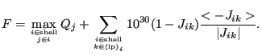
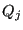
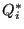

Next: Modifying the boundary conditions Up: Mesh refining procedure Previous: projectmidnodes.f Contents
In smoothbadmid.f the position of all subsurface bad midnodes (surface bad midnodes are not modified) is optimized by minimizing the following function F (using fminsi):
|  | (719) |
In the first term of the right hand side  is the quality measure for linear tetrahedra. To this end each quadratic tetrahedral element is subdivided into 8 linear tetrahedrons. This measure seems to be more appropriate than using  during the optimization and leads to better shaped tetrahedrons. So basically the first term optimizes the volume of the 8 linear subtetrahedra of the quadratic tetrahedron. The second term avoids the presence of negative Jacobian determinants at the integration points (abreviated as ip in the above formula).